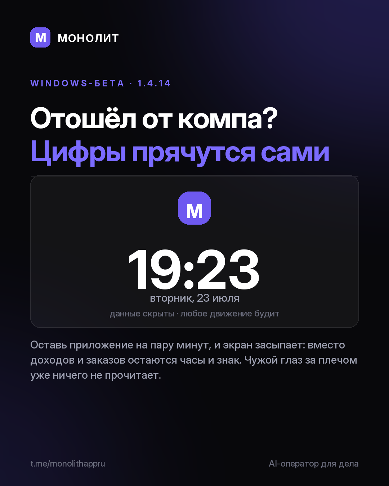

Дневник разработки · 02.08.2026
МОНОЛИТ сам прячет твои цифры (1.4.14 beta)

Отошёл от компа? МОНОЛИТ сам спрячет твои цифры
Оставь приложение на пару минут, и экран красиво засыпает: вместо доходов и заказов остаются часы и знак. Любое движение или клавиша будят обратно, ровно там, где остановился. Чужой глаз за плечом уже ничего не прочитает.
Замок ожил
Заблокированный экран перестал быть мёртвой картинкой. Знак дышит, подсказки сами сменяются. Возвращаться приятно.
Тур по разделам
Запутался, что где лежит? В Профиле теперь есть Обучение: приложение само проведёт по разделам и покажет, где что живёт.
Новый установщик
Раньше установка пугала серым окном Windows. Теперь она тёмная, спокойная и ведёт за руку с первого клика.
Windows-бета 1.4.14, уже стоит и обновится сама. Первый раз ставишь: сайт. Вопросы и доступ @sbphotoshoter
МОНОЛИТ — учёт заказов, клиентов и денег одной фразой. Windows и Android, бесплатная бета.
Скачать Читать канал